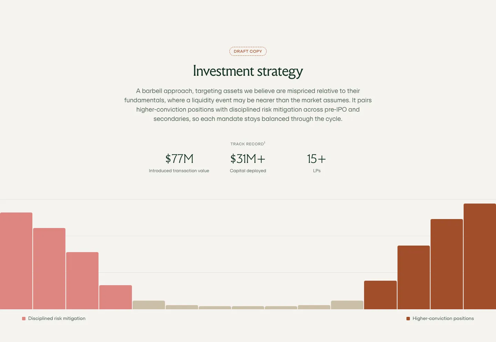
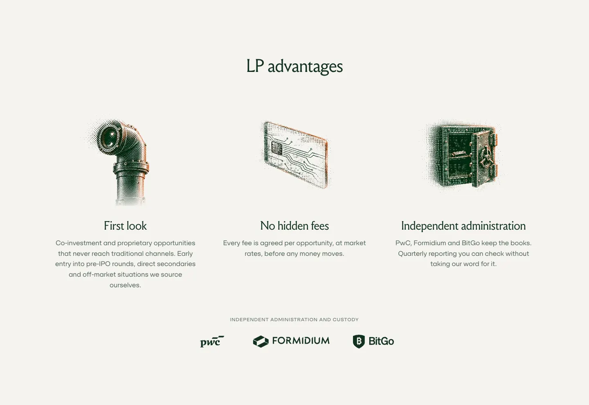
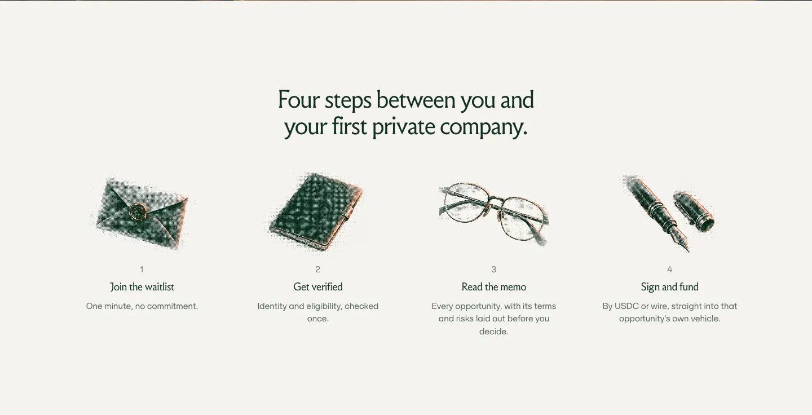
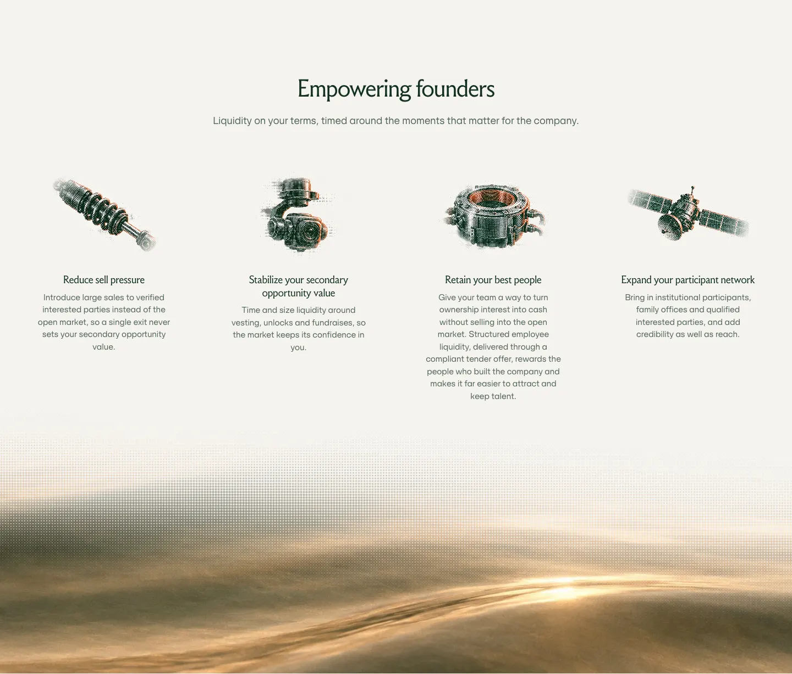
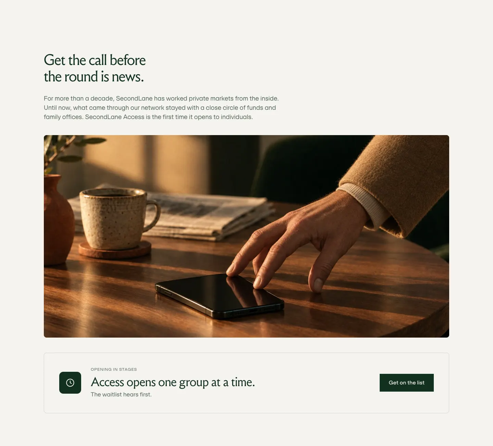
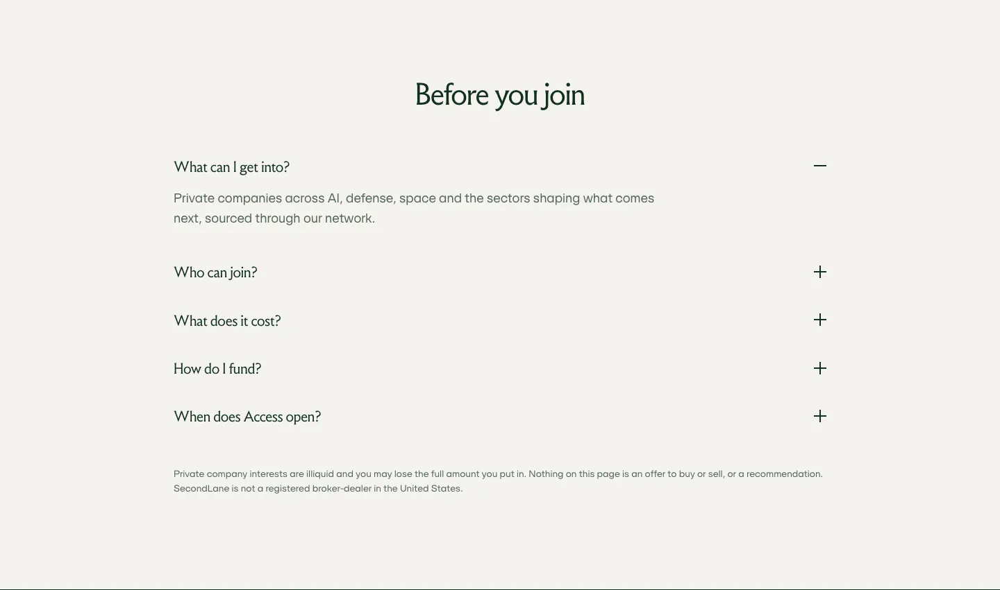

Patterns
How the pages are built
Capital v2 is the closest example of the system and the reference for type, spacing and motion. Each page is judged against the client feedback (10 Nov), not against Capital: keep a page's own layout and adapt its components, borders, illustrations and photography. One alignment per section, no decorative shapes, no panels behind accordion rows, square buttons, no hover zoom on images.
Hero with a halftone edge
Full-height green hero, copy on the left, a Round 6 photograph on the right whose left edge dissolves into the green along a curve of dots. As the page scrolls the green advances into the photo along the curve and the photo drifts a little slower than the page.
| Property | Value |
|---|---|
| Ground | #12301F, text #F5F3EF; standfirst at 78% |
| Title | Ashcroft 400, 64px / 1.05 |
| Photo | Round 6 photography, 3:2, object-position chosen per image |
| Edge | data-dotedge="left" data-curve="x,y …" data-band=".26" data-grow=".18" (dotedge.js curve mode) |
| Drift | photo translateY up to 90px across the hero height |
| Buttons | primary linen on green; Sign in filled linen over the hero, outlined elsewhere |
Section heading and standfirst
Every section opens with the same pair: a serif heading and one line of standfirst underneath, centred for overviews and left-aligned when the section has a column of copy.

| Property | Value |
|---|---|
| Heading | h2 · Ashcroft 400, 45px / 1.1, #12301F on linen |
| Standfirst | 18px Schrifted at 72% ink, 22px under the heading |
| Ground | Linen #F5F3EF; dark sections invert to linen type on #12301F |
| Spacing | 136px section padding top and bottom, 72px from head to content |
Feature columns (open, no cards)
Three or four points in open columns: an illustration on top, a serif title, a short line of copy. No card, no border, no top rule. Used for LP advantages, Built on trust, the four Access steps and Empowering founders.

| Property | Value |
|---|---|
| Columns | 3 or 4, max width 1312px, gap 64px (Prime founders 104px) |
| Illustration | halftone object, light version, 5:4 frame, radial mask so the edges dissolve into linen |
| Title | Ashcroft 400; 30px for three columns, 1.17em for four |
| Copy | 15 to 16.5px, max 28 to 52ch, centred |
| Steps | numbered variant: small number above the title, 15px at 60% |
| Motion | columns rise in one by one, 240ms apart |
| Hover | none on the cards or images |
Numbered steps
The same open-column pattern with a small number above each title, for sequences such as the four Access steps.

Accordion with an image strip
A list of points on the right; one open at a time. The open row shows its copy and link, the closed rows are titles at 45% opacity. A tall halftone illustration on the opposite edge swaps with a crossfade when a row opens.
| Property | Value |
|---|---|
| Rows | plain rows, 1px hairline between them, no panels or tinted layers |
| Titles | Ashcroft 400, 30px; closed rows at 45%, full on hover and when open |
| Image strip | 44% of the section width, flush to the edge; Prime uses 80% of the section height with the whole illustration shown |
| Swap | opacity crossfade, 0.7s ease |
| Ground | linen |
Full-bleed image with a dot-fade top
A full-width photograph that dissolves up into the page through a band of halftone dots and ends in a hard line underneath. The fade can be angled.

| Property | Value |
|---|---|
| Script | dotedge.js top mode: data-dotedge="top" data-band=".85" data-tilt=".18" data-cell="5" |
| data-band | share of the image height that fades (0 to 1) |
| data-tilt | how much lower the edge sits on the right than on the left (negative = higher on the right) |
| data-cell | dot cell size in px |
| data-bottom | optional fade at the bottom as well |
| Bottom edge | hard line by default |
Sign-up card over a photograph
The Access sign-up sits on a linen card centred over a full-bleed photo that dissolves into the green hero above it. The card rises in shortly after load.
| Property | Value |
|---|---|
| Card | linen #F5F3EF, square corners, max width 460px, padding 36px 40px |
| Title | Ashcroft 400, 30px |
| Field | 1px border, 48px high; button green #12301F, full width, hover rgba(18,48,31,.86) |
| Fine print | 12px at 60% |
| Load | rise 36px with an 8px blur, 0.9s |
| Photo edge | top mode, band .5, tilt .1 |
Full-width call-to-action strip
The key action under a section: one full-width outlined strip with an icon tile, a title and a button. Same ground as the page.

| Property | Value |
|---|---|
| Strip | full container width, 1px rgba(18,48,31,.16) border, 8px radius, transparent ground, padding 40px 44px |
| Icon tile | 64px, 12px radius, green with a linen line icon |
| Title | Ashcroft 400, 38px |
| Button | green primary |
Closing band with a dark halftone object
Every page ends on a green band: a heading, a standfirst, a primary and an arrow link, and a dark halftone object in the right half with a soft dot halo.
| Property | Value |
|---|---|
| Ground | #12301F |
| Object | halftone dark version, right half, halo fades out into the green |
| Actions | linen primary button plus an arrow link |
Dark panel with three short columns
A green panel inside a linen page for a secondary audience (Companies, For holders): headline, copy and outlined button on the left, a dark halftone object on the right, three short columns underneath with no dividers.
FAQ accordion
Plus and minus rows on linen, one open at a time, risk line underneath. The heading uses the section-head size; questions are a level smaller.

| Property | Value |
|---|---|
| Questions | Ashcroft 400, 22px, 20px vertical padding |
| Icon | 18px plus that rotates to a minus |
| Width | max 940px, centred |
Reveals and scroll effects
Things settle rather than bounce. Sections reveal as they enter, once; nothing loops; everything rests under reduced motion.
| Property | Value |
|---|---|
| Reveal | opacity 0 to 1, translateY 28px to 0, blur 8px to 0, 1s cubic-bezier(.16,1,.3,1) |
| Stagger | 110ms between items (240ms for feature columns) |
| Trigger | IntersectionObserver, rootMargin 0 0 -15% 0, runs once per group |
| Classes | v2rv and v2rv-wait (not rv, which older pages use) |
| Hero | green advances into the photo along the curve (data-grow) and the photo drifts |
| Colour fade | Capital only: hero and first section fade green to linen on scroll. Access keeps a hard cut. |
| Reduced motion | all reveals and drifts off, content visible |
Imagery rules for new images
Two kinds of image only. Every image in the library follows these rules; new ones should too.
| Property | Value |
|---|---|
| Photography | Round 6: people together in elevated spaces, low warm sun, deep green shade, travertine, bronze, walnut, glass; tailoring in wool, camel and charcoal; one terracotta accent; faces in soft profile, nobody looks at the camera |
| People | vary ages and looks; do not reuse the older grey-haired man that recurs in generated images |
| Avoid | detail and furniture shots without people (water textures excepted), handshakes, laptops, charts, staged stock |
| Halftone objects | one object per image from a SecondLane sector (AI, crypto, fintech, consumer tech, gaming, space, deep tech, autonomy, defense, energy); light version alone on #F5F3EF, dark version on #12301F with a soft halo; one terracotta or bronze accent; no yellow or neon |
| Generation | GPT Image 2.5 through ComfyUI, 1536×1024 or 1024×1536 (1K), style reference images r5_73_style_light, r5_73_style_dark, r5_74_fb_lounge; flatten light backgrounds to #F5F3EF |
| Delivery | WebP for halftones, JPEG for photos; empty alt for decorative halftones |
Files for these patterns
The v2 pages are plain HTML and CSS with two small scripts. Each page carries its own CSS block at the end of the head, after the shared site styles.
| Property | Value |
|---|---|
| dotedge.js | files/dotedge.js · halftone edges for images and boxes: box, image, curve, top modes |
| Reveals | inline script at the end of each v2 page: groups of selectors, staggered, observed once |
| Source | the GitHub repository yyyyyyyyuri/secondlane-preview: capital-v2.html, companies-v2.html, access-v2.html, prime-v2.html and assets/ |
| Tokens | Tokens and code · colours, type and spacing unchanged from v0.1 |